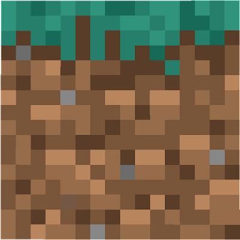
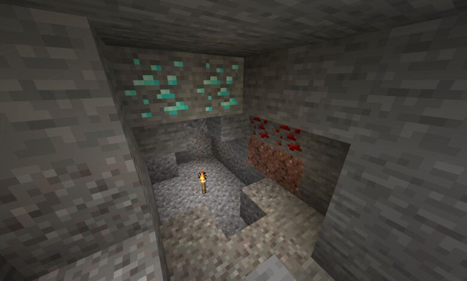
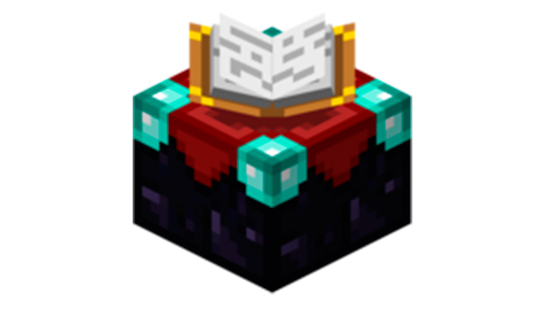
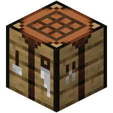
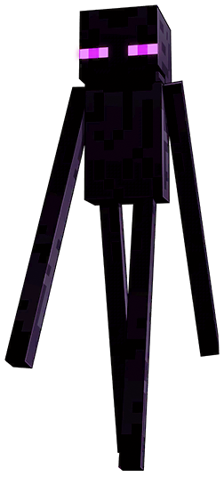
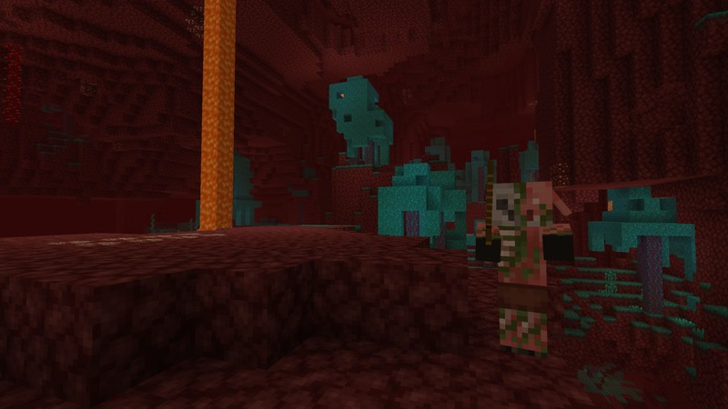
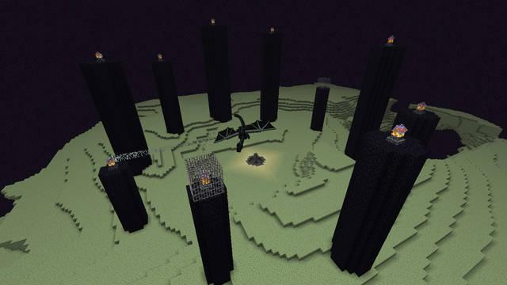

Minecraft es un videojuego de mundo abierto donde la exploración y las construcciones son fundamentales. Creado por Markus Notch Persson, nos permite desarrollar nuestros propios universos fantásticos y artísticos, mediante la colocación y destrucción de bloques. Al ser un videojuego de mundo abierto, no tiene una misión concreta (salvo alguno de sus modos de juego) y consiste en la construcción libre mediante el uso de cubos con texturas tridimensionales. Los bloques representan distintos elementos de la naturaleza y el jugador puede desplazarse por su entorno y modificarlo mediante la creación, recolección y transporte de esos bloques. Nunca se generan dos mundos iguales, pues se crean mediante el uso de algoritmos.
El modo multijugador funciona con un servidor, que permite a los jugadores jugar en línea o a través de una red de área local con otras personas. Hay varias opciones de personalización que los operadores pueden configurar. Esta configuración depende del tipo de servidor y puede crear muchas experiencias diferentes para varios jugadores. El modo de juego en Minecraft es generalmente el mismo en un solo jugador y multijugador, con algunas diferencias notables. El modo multijugador tiene más énfasis en la comunidad y la colaboración entre jugadores, que es asistido por la función de chat. El modo multijugador permite que el jugador construya con otros jugadores. Además, hay muchos mapas de aventuras y minijuegos en los que se requieren múltiples jugadores.
El jugador es la persona controlada por el usuario dentro del mundo virtual. Cuando el usuario comienza una partida, el jugador entrará en un mundo generado a partir de una semilla, con un inventario vacío. Si la opción de cofre de bonificación está habilitada, se genera un cofre lleno de objetos básicos cerca del jugador. El jugador tiene una barra de salud con 10 corazones y puede sufrir daños por caídas, asfixia, ahogamiento, fuego, lava, relámpagos, cactus, arbustos de bayas dulces, caídas al Vacío, yunques que caen y ser golpeado por criaturas y otros jugadores. El daño a la salud se puede reducir con una armadura o una poción de resistencia y la salud se puede restaurar comiendo alimentos y bebiendo pociones específicas, o si la dificultad se establece en Pacífica, la salud se regenera por sí sola. El hambre también es un factor si la dificultad no se establece en Pacífica, se agota con el tiempo e incluso más rápido al correr, saltar o nadar. La comida repone el nivel de hambre; sin embargo, comer carne podrida y pollo crudo tiene la posibilidad de provocar un efecto de hambre en el jugador. Dependiendo del nivel de dificultad, la inanición agota la salud de un jugador e incluso puede matarlo.
BLOQUES
El mundo de Minecraft tiene lugar dentro de una cuadrícula tridimensional de cubos, y cada cubo está ocupado por un cierto tipo de bloque (no todos son necesariamente cúbicos). Hay diferentes tipos de bloques; bloques naturales como hierba, piedra y minerales se generan aleatoriamente en el mundo. También hay bloques que los jugadores pueden crear, como una mesa de trabajo y un horno. Los recursos se pueden extraer de los bloques a mano o con herramientas. Algunos de estos recursos son simplemente bloques en el inventario del jugador que se pueden colocar en otro lugar, mientras que otros se utilizan como material para crear otros bloques o herramientas. Otros no tienen ningún uso práctico. Algunos bloques no se pueden romper por medios normales de supervivencia, p. Ej. lecho de roca, pórticos finales, bloques de mando y barreras.
MINAR
La minería es uno de los principales aspectos de Minecraft, y consiste en la extracción de minerales y otros materiales de las profundidades del suelo. Estos minerales incluyen el carbón, el hierro, el Oro, la redstone, el diamante, el lapislázuli y la esmeralda. Se necesita excavar para un agujero en el suelo o entrar en una cueva subterránea para cavar. Las minas son zonas generalmente abundantes en recursos y minerales.
POCIONES Y ENCANTAR
Puedes crear pociones a partir de varios ingredientes y agua utilizando un soporte para pociones. Se almacenan en una botella de vidrio y luego el jugador los consume o los arroja a otras turbas para generar un cierto efecto basado en los ingredientes utilizados para crear la poción. El encantamiento también se usa para mejorar armaduras, herramientas o armas con una mesa de encantamiento. Se puede acceder a encantamientos más poderosos ganando experiencia y colocando Estanterías alrededor de la mesa de encantamientos.
FABRICAR Y FUNDIR
La elaboración permite a los jugadores crear nuevas herramientas y bloques utilizando objetos de su inventario. Las versiones posteriores a menudo contienen recetas de elaboración para nuevos bloques y objetos. Para crear, un jugador puede usar la cuadrícula de 2 × 2 en el inventario o la cuadrícula de 3 × 3 proporcionada por una mesa de trabajo. La fundición requiere un horno además de combustible, y procesa bloques en una forma más útil, como mineral de hierro a lingotes de hierro.
CRIATURAS
Las criaturas son los animales y otras criaturas que habitan el mundo. Las criaturas hostiles atacan al jugador, mientras que las criaturas pasivas no lo hacen. Las criaturas neutrales atacan cuando son provocadas.
EL NETHER
El Nether es la dimensión de Minecraft accesible desde la superficie mediante un portal del Nether. Consiste de cinco biomas, esos son los Nether Wastes, los deltas de basalto, el bosque carmesí y el bosque distorsionado y los valles de almas: cada bioma tiene una generación y un terreno únicos. Esta poblado por piglins zombificados, blazes, ghasts, esqueletos del Wither, cubos de magma, piglins yhoglins.
EL END
El End es otra dimensión del juego donde el jugador lucha contra el enderdragón. Se puede acceder al End entrando en un portal del End que se encuentra en una stronghold. El End está compuesto de end stone y está habitado por endermans. También contiene altos pilares de obsidiana sobre los cuales hay cristales del End que curan al enderdragón. Una vez que se mata al enderdragón, se crea el portal de salida en el centro del mapa, y se crea un portal cerca de un borde del mapa, que transporta al jugador a las islas expansivas del extremo exterior.

Los servidores de Minecraft permiten a los jugadores jugar en línea o a través de una red de área local con otras personas. Internamente, el juego ejecuta un servidor para las partidas de un solo jugador, esto se hizo con el fin de hacer que la experiencia de juego de un solo jugador sea coherente con la experiencia multijugador y hacer que los cambios realizados en el juego, como las correcciones de errores, se apliquen tanto a las partidas de un solo jugador como a las partidas multijugador. El software de servidor oficial sólo está disponible en Java Edition en el estado de lanzamiento. El software de servidor de Bedrock Edition está actualmente en fase Alfa.
Minecraft Realms es un función que aún se está llevando a cabo, esta permite a los jugadores crear y administrar servidores que Mojang soporta en multijugador.[1] Realms hace más fácil y rápido el trabajo de crear un servidor de Minecraft y permite al propietario administrarlo desde el juego. Los realms no están destinados para soportar mucha gente, solo para un grupo de amigos o familiares.
Explora en un mundo de minecraft lleno de aventura y diversión, con tus amigos o solo, mientras cumples desafios, consigues logros y dejas que tu imaginacion vuele para hacer grandes creaciones.